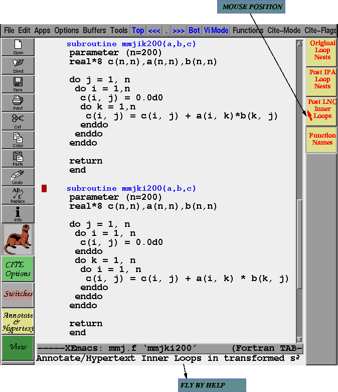
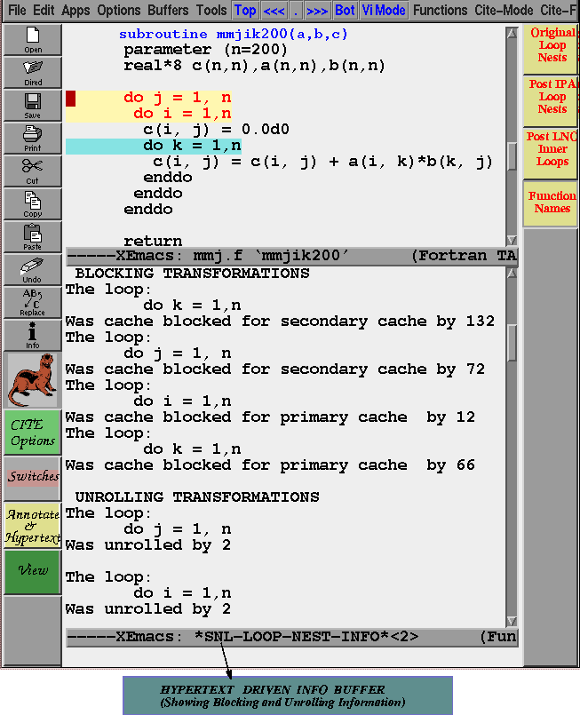
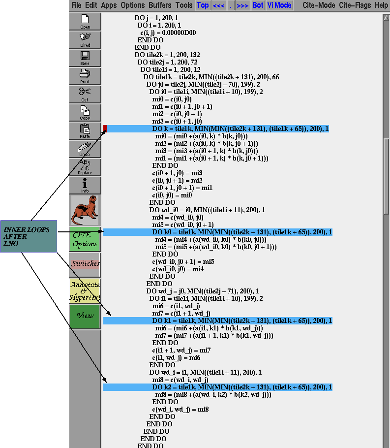
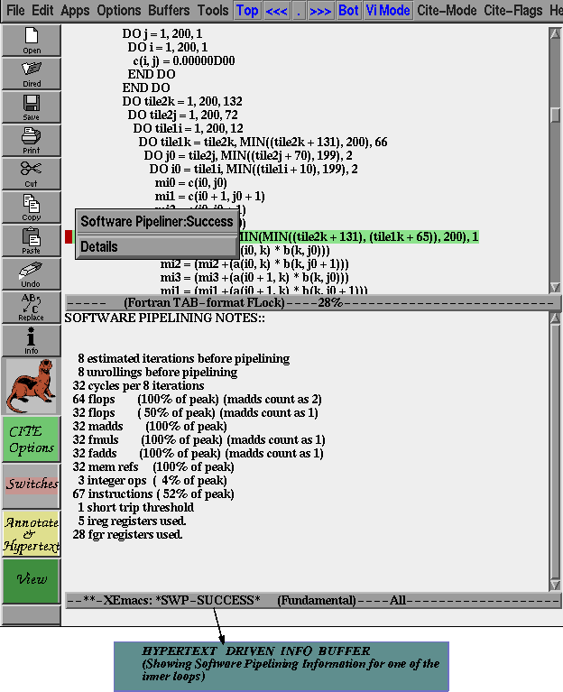

In the original subroutine there was but one inner loop. Any guesses on how many inner loops are in the transformed source after LNO? We will know the number by the end of this section.
First let us go back to the "Annotate/Hypertext" toolbar. The third toolbar button on the right toolbar allows us to annotate all of the loops after the Loop Nest Optimizer with the software pipelining information.

First we will see what the Loop Nest Optimizer has done. We can do this by annotating the original loop nests and obtaining the information about the loop nest as in the interchange example. As the following figure shows this loop nests has been cache blocked for both the primary and secondary caches as well as register blocked (outer loop unrolled).

Looking next at the inner loops after the loop nest optimizer, we see that there are 4 of them now. The original source had one. The other three inner loops are newly created by LNO. They are in the cache and register winddown sections of the transformed code. Also notice that the assignment to C(i,j) has been peeled out and the inner loop there is not annotated. That is not a worthwhile inner loop to be optimized and LNO marks it that way. CITE knows about it from the trace information generated by LNO and skips it as well. For the rest of the inner loops CITE annotates them with software pipelining information. In the future there will be other information such as the estimated iterations of the loop, whether it is a cache winddown or register winddown loop etc.,

The final figure just shows querying the annotation on the first of the 4 inner loops revealing the software pipelining information.
